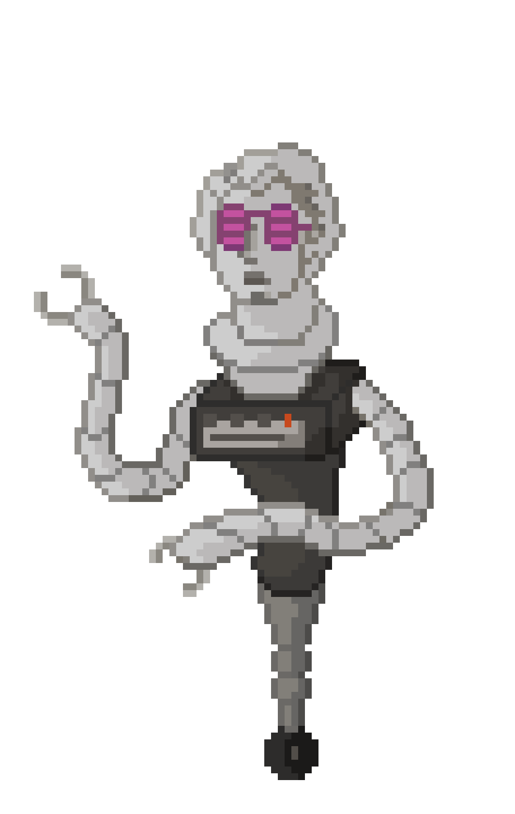
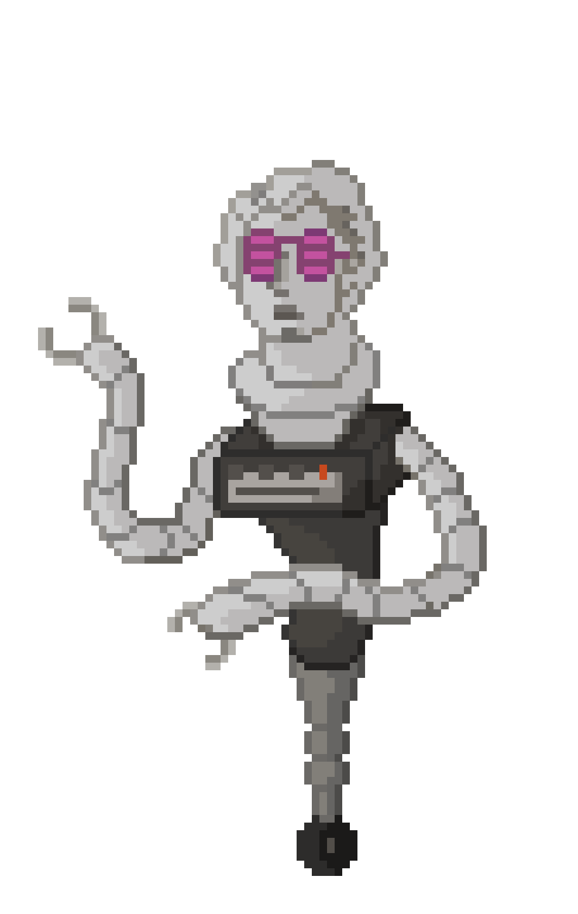

D35P4C1T0
Robot creado en 1986 para bailar y reproducir las mejores canciones de la década. Sin embargo, los años le pesan, y su estilo es la base de lo que ahora conocemos como Vaporwave. Frecuenta los bares arcade de la zona centro de Madrid.